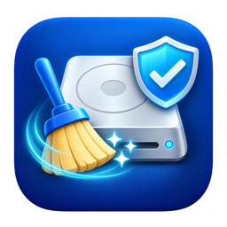

홈 폴더 접근 허락
App Store 앱은 허락받은 폴더만 볼 수 있습니다. 정리 화면을 처음 열면 나오는 창에서 홈 폴더를 그대로 두고 ‘허락’을 누르세요.
허락은 이 Mac에만 저장되고 설정에서 언제든 거둘 수 있습니다.

TidyHawkMac의 캐시, 개발 도구 흔적, AI 모델, 큰 파일과 중복 파일을 찾아 직접 고른 항목만 휴지통으로 옮깁니다.
스캔과 정리는 모두 이 Mac 안에서 이루어집니다.
macOS 14 이상 · 버전 1.1 기준이며, 사용 중인 버전에 따라 메뉴가 다를 수 있습니다.
App Store 앱은 허락받은 폴더만 볼 수 있습니다. 정리 화면을 처음 열면 나오는 창에서 홈 폴더를 그대로 두고 ‘허락’을 누르세요.
허락은 이 Mac에만 저장되고 설정에서 언제든 거둘 수 있습니다.
한눈에 보기의 ‘빠른 스캔 시작’을 누르면 시스템 정크, 개발자 정크, AI 정리를 차례로 살펴봅니다.
스캔은 읽기만 하며 파일을 지우지 않습니다.
결과에서 항목을 확인하고 고른 뒤 ‘휴지통으로 옮기기’를 누릅니다. 실행 중인 앱이 쓰는 항목은 기본으로 고르지 않습니다.
옮긴 파일은 휴지통에 남고, 앱이 휴지통을 비우지는 않습니다.
최근 50회의 정리 날짜, 옮긴 용량, 성공·실패 항목을 정리 기록에서 확인합니다. 휴지통에 남아 있는 항목은 Finder에서 바로 볼 수 있습니다.
앱 캐시, 로그, 진단 보고서, 브라우저 캐시, 받아 둔 설치 파일의 사본처럼 다시 만들어지는 파일을 찾습니다.
Xcode 빌드 결과물과 기기 지원 파일, 시뮬레이터·패키지 관리자 캐시, 오래된 프로젝트의 의존성 폴더를 찾습니다. Docker·OrbStack 같은 도구는 용량과 정리 명령을 안내합니다.
AI 앱 캐시와 중단된 다운로드 조각을 정리하고, Ollama·Hugging Face·LM Studio·ComfyUI 등에서 받은 모델을 골라 지우거나 외장 디스크로 옮깁니다.
홈 폴더의 큰 파일을 크기·종류·기간으로 걸러 봅니다. 고른 파일을 다른 디스크로 옮길 수도 있습니다.
내용이 완전히 같은 파일을 묶어 보여 줍니다. 묶음마다 하나는 남겨야 정리할 수 있습니다.
홈 폴더에서 시작해 어느 폴더가 공간을 많이 쓰는지 따라 들어가며 확인합니다.
앱과 함께 남은 설정·캐시·컨테이너를 찾아 함께 정리하고, 이미 지운 앱이 남긴 파일도 찾습니다.
날짜별 여유 공간 그래프와 지난 측정보다 늘어난 폴더를 보여 줍니다.
단축어 앱에서 ‘여유 공간 확인’과 ‘빠른 스캔 시작’을 쓸 수 있고, 여유 공간 위젯을 바탕화면이나 알림 센터에 둘 수 있습니다.
구독이 아닙니다. 가격은 앱 내 구매 화면에서 확인하세요.
Pro를 구매해도 파일이 자동으로 정리되지는 않습니다. 고른 항목을 확인한 뒤 직접 실행해야 하며, macOS의 접근 권한 제한은 그대로 적용됩니다. 다시 설치했거나 다른 Mac이라면 Pro 화면의 ‘구매 복원’을 눌러 주세요.
아니요. 스캔은 읽기만 합니다. 직접 고른 항목만, 확인 창을 거친 뒤 휴지통으로 옮깁니다.
휴지통을 비우기 전이라면 Finder에서 휴지통을 열어 항목을 고르고 ‘되돌려 놓기’를 선택하세요. 정리 기록에서 휴지통 안의 위치를 바로 열 수 있습니다.
옮긴 파일은 휴지통에 남아 있습니다. 휴지통을 비워야 공간이 확보되며, 시스템 스냅샷이나 다른 파일과 공유하는 공간 때문에 표시한 용량만큼 늘지 않을 수도 있습니다.
macOS가 접근을 막았거나 디스크 연결이 끊긴 위치입니다. 안내의 ‘권한·연결 문제 보기’에서 위치를 확인하고, 시스템 설정 > 개인정보 보호 및 보안 > 파일 및 폴더에서 TidyHawk 항목을 살펴보세요. 일부 시스템 폴더와 다른 앱의 보관함은 허락해도 읽을 수 없습니다.
지금 실행 중인 앱이 쓰고 있을 수 있는 항목입니다. 기본으로 고르지 않으며, 해당 앱을 종료한 뒤 정리하는 것이 안전합니다.
고른 모델을 외장 디스크에 복사하고 크기와 파일 수를 확인한 다음 원본을 휴지통으로 옮깁니다. 옮긴 뒤에는 도구가 새 위치를 찾도록 설정하는 방법을 안내하며, 앱이 설정을 대신 바꾸지는 않습니다. Ollama 모델은 데이터를 여러 모델이 함께 써서 옮기지 않습니다.
어느 묶음의 파일을 모두 고르면 하나도 남지 않게 되므로 정리를 막습니다. 남길 파일의 선택을 풀어 주세요.
이런 데이터는 해당 도구가 직접 지워야 안전합니다. TidyHawk는 용량과 정리 명령을 보여 주고 복사만 하며, 명령은 내용을 확인한 뒤 터미널에서 직접 실행하세요.
구매한 Apple 계정으로 로그인했는지 확인하고, Pro 화면에서 ‘구매 복원’을 선택하세요. 네트워크 연결도 확인해 주세요. 계속 문제가 있으면 오류 문구와 앱·macOS 버전을 보내 주세요.
아니요. 스캔과 정리는 이 Mac 안에서 처리하며, 개발자는 서버를 운영하지 않습니다. 자세한 내용은 개인정보 처리방침을 확인하세요.
오류 내용, 앱 버전, macOS 버전, 사용한 화면(시스템 정크·개발자 정크·AI 정리 등)을 알려 주세요. 화면을 첨부할 때는 파일 경로와 계정 이름 같은 개인정보를 가려 주세요. 암호나 개인 파일은 보내지 마세요.
보통 2~3일 안에 답변드립니다.
TidyHawk finds caches, developer tool leftovers, AI models, large files and duplicate files on your Mac, and moves only the items you select to Trash.
Scanning and cleanup happen entirely on this Mac.
Requires macOS 14 or later. Written for version 1.1; menus may differ in your installed version.
App Store apps can only see folders you allow. When a cleanup screen first asks, keep your Home folder selected in the dialog and click Allow.
The permission is stored only on this Mac and can be revoked in Settings at any time.
Click Start Quick Scan on Overview to review System Junk, Developer Junk and AI Cleanup in sequence.
Scanning only reads; it never deletes files.
Review the results, select items and click Move to Trash. Items used by running apps are not selected by default.
Moved files stay in Trash, and the app never empties Trash.
See the dates, moved sizes, and successful and failed items of the last 50 cleanups. Items still in Trash can be shown in Finder.
Finds files that are recreated when needed, such as app caches, logs, diagnostic reports, browser caches and extra copies of downloaded installers.
Finds Xcode build products and device support files, simulator and package manager caches, and dependency folders of old projects. For tools such as Docker and OrbStack it shows their size and the cleanup command.
Cleans AI app caches and interrupted download fragments, and lets you remove or move to an external disk the models downloaded with Ollama, Hugging Face, LM Studio, ComfyUI and others.
Filter large files in your Home folder by size, kind and age. Selected files can also be moved to another disk.
Groups files with identical content. At least one copy in each set must remain before you can clean.
Starting from your Home folder, drill down to see which folders use the most space.
Finds the settings, caches and containers left with an app so you can clean them together, and finds leftovers of apps you already deleted.
Shows a chart of free space by day and the folders that grew since the last measurement.
The Shortcuts app offers Check Free Space and Start Quick Scan, and a Free Space widget can be added to your desktop or Notification Center.
Not a subscription. See the in-app purchase screen for pricing.
Purchasing Pro does not clean files automatically. You review the selected items and run cleanup yourself, and macOS access restrictions still apply. After reinstalling or on another Mac, choose Restore Purchases on the Pro screen.
No. Scanning only reads. Only the items you select are moved to Trash, after a confirmation dialog.
Before Trash is emptied, open Trash in Finder, select the item and choose Put Back. Cleanup History can show the item’s location in Trash.
Moved files remain in Trash. Space is freed when you empty Trash, and it may grow by less than the displayed size because of system snapshots or space shared with other files.
macOS blocked access to them or a disk was disconnected. Open the permission and connection details in the notice, and review the TidyHawk entries in System Settings > Privacy & Security > Files & Folders. Some system folders and other apps’ containers cannot be read even with permission.
The item may be in use by an app that is running now. It is not selected by default; quit that app before cleaning it.
The selected models are copied to the external disk, the size and file count are verified, and then the originals are moved to Trash. Afterwards the app explains how to point the tool at the new location; it does not change settings for you. Ollama models are not moved because several models share the same data.
When every copy in a set is selected, no copy would remain, so cleanup is blocked. Deselect the file you want to keep.
That data is safest when removed by the tool itself. TidyHawk shows the size and the cleanup command and only copies it; review it and run it in Terminal yourself.
Check that you are signed in with the Apple Account used for the purchase and choose Restore Purchases on the Pro screen. Check your network connection. If the issue persists, send us the error message and your app and macOS versions.
No. Scanning and cleanup run on this Mac, and the developer does not operate a server. See the Privacy Policy for details.
Include the error message, app version, macOS version and the screen you used (System Junk, Developer Junk, AI Cleanup and so on). Hide personal information such as file paths and account names in screenshots. Do not send passwords or personal files.
We usually reply within 2–3 days.